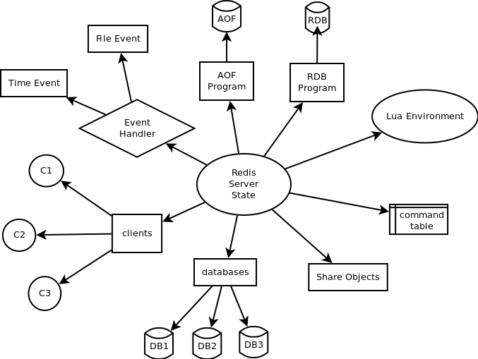

服务器与客户端
Table of Contents
服务器本身并没有多少需要介绍的新东西， 因为服务器除了维持服务器状态之外， 最重要的就是将各个功能模块组合起来。所以接下来将焦点放在服务器的初始化过程， 以及服务器对命令的处理过程上
- 首先介绍服务器的 初始化 操作， 观察一个 Redis 服务器从启动到可以接受客户端连接， 需要经过什么步骤
- 接着介绍客户端是如何 连接 到服务器的， 而服务器又是如何维持多个客户端的不同状态的
- 最后介绍命令从 发送 到 处理 的整个过程， 并列举了一个 SET 命令的执行过程作为例子
初始化服务器
从启动 Redis 服务器， 到服务器可以接受外来客户端的网络连接这段时间， Redis 需要执行一系列初始化操作。整个初始化过程可以分为以下六个步骤：
- 初始化服务器全局状态
- 载入配置文件
- 创建 daemon 进程
- 初始化服务器功能模块
- 载入数据
- 开始事件循环
以下将介绍 Redis 服务器初始化的各个步骤
初始化服务器全局状态
redis.h/redisServer 结构记录了和服务器相关的所有数据， 这个结构主要包含以下信息：
- 服务器中的 所有数据库
- 命令表 ：在执行命令时，根据字符来查找相应命令的实现函数
- 事件 状态
- 服务器的 网络连接信息 ：套接字地址、端口，以及套接字描述符
- 所有 已连接客户端 的信息
- Lua 脚本的运行环境 及相关选项
- 实现 订阅与发布 pub/sub 功能所需的数据结构
- 日志 log 和慢查询日志 slowlog 的选项和相关信息
- 数据 持久化 AOF 和 RDB 的配置和状态
- 服务器配置选项 ：
- 要创建多少个数据库
- 是否将服务器进程作为 daemon 进程来运行
- 最大连接多少个客户端
- 压缩结构 zip structure 的实体数量
- 。。。。。。。
- 统计信息：
- 键有多少次命令不命中
- 服务器的运行时间
- 内存占用
- 。。。。。。
为了简洁起见，上面只列出了单机情况下的 Redis 服务器信息，不包含 SENTINEL 、 MONITOR 、 CLUSTER 等功能的信息
在这一步， 程序 创建 一个 redisServer 结构的实例变量 server 用作服务器的 全局状态 ， 并将 server 的各个属性初始化为 默认值
当 server 变量的初始化完成之后， 程序进入服务器初始化的下一步： 读入配置文件
载入配置文件
上一步中， 程序为 server 变量（也即是服务器状态）的各个属性设置了默认值， 但这些默认值有时候并不是最合适的：
- 用户可能想使用 AOF 持久化，而不是默认的 RDB 持久化
- 用户可能想用其他端口来运行 Redis ，以避免端口冲突
- 用户可能不想使用默认的 16 个数据库，而是分配更多或更少数量的数据库
- 用户可能想对默认的内存限制措施和回收策略做调整
- 。。。。。。
为了让使用者按自己的要求配置服务器， Redis 允许用户在运行服务器时， 提供相应的 配置文件 config file 或者显式的 选项 option ， Redis 在初始化完 server 变量之后， 会读入配置文件和选项， 然后根据这些配置来对 server 变量的属性值做相应的修改：
- 如果单纯执行 redis-server 命令，那么服务器以默认的配置来运行 Redis
另一方面， 如果给 Redis 服务器送入一个配置文件， 那么 Redis 将按配置文件的设置来更新服务器的状态
比如说， 通过命令 redis-server /etc/my-redis.conf ， Redis 会根据 my-redis.conf 文件的内容来对服务器状态做相应的修改
除此之外， 还可以显式地给服务器传入选项， 直接修改服务器配置
举个例子， 通过命令 redis-server --port 10086 ， 可以让 Redis 服务器端口变更为 10086
当然， 同时使用配置文件和显式选项也是可以的， 如果文件和选项有冲突的地方， 那么优先使用 选项所指定的配置值
如果运行命令 redis-server /etc/my-redis.conf --port 10086 ， 并且 my-redis.conf 也指定了 port 选项 那么服务器将优先使用 --port 10086 （实际上是选项指定的值覆盖了配置文件中的值）
创建 daemon 进程
Redis 默认以 daemon 进程的方式运行。当服务器初始化进行到这一步时， 程序将 创建 daemon 进程 来运行 Redis ， 并 创建 相应的 pid 文件
初始化服务器功能模块
在这一步， 初始化程序完成两件事：
- 为 server 变量 的 子属性 分配 内存
- 初始化 这些子属性
为数据结构分配内存， 并初始化这些数据结构， 等同于对相应的功能进行初始化
比如说， 当为订阅与发布所需的链表分配内存之后， 订阅与发布功能就处于就绪状态， 随时可以为 Redis 所用了
在这一步， 程序完成的主要动作如下：
- 初始化 Redis 进程的 信号 功能
- 初始化 日志 功能
- 初始化 客户端 功能
- 初始化 共享 对象
- 初始化 事件 功能
- 初始化 数据库
- 初始化 网络连接
- 初始化 订阅与发布 功能
- 初始化各个 统计变量
- 关联 服务器定时操作 （cron job）到 时间事件 ，关联 客户端应答处理器 到 文件事件
- 如果 AOF 功能已打开，那么打开或创建 AOF 文件
- 设置 内存限制
- 初始化 Lua 脚本环境
- 初始化 慢查询功能
- 初始化 后台定时线程
完成这一步之后， 服务器打印出 Redis 的 ASCII LOGO 、服务器版本等信息， 表示所有功能模块已经就绪， 可以等待被使用了：
_._
_.-``__ ''-._
_.-`` `. `_. ''-._ Redis 2.9.7 (7a47887b/1) 32 bit
.-`` .-```. ```\/ _.,_ ''-._
( ' , .-` | `, ) Running in stand alone mode
|`-._`-...-` __...-.``-._|'` _.-'| Port: 6379
| `-._ `._ / _.-' | PID: 6717
`-._ `-._ `-./ _.-' _.-'
|`-._`-._ `-.__.-' _.-'_.-'|
| `-._`-._ _.-'_.-' | http://redis.io
`-._ `-._`-.__.-'_.-' _.-'
|`-._`-._ `-.__.-' _.-'_.-'|
| `-._`-._ _.-'_.-' |
`-._ `-._`-.__.-'_.-' _.-'
`-._ `-.__.-' _.-'
`-._ _.-'
`-.__.-'
虽然所有功能已经就绪， 但这时服务器的数据库还是一片空白
程序还需要将服务器上一次执行时记录的数据载入到当前服务器中， 服务器的初始化才算真正完成
载入数据
在这一步， 程序需要将持久化在 RDB 或者 AOF 文件里的数据， 载入到服务器进程里面。
- 如果服务器有 启用 AOF 功能的话， 那么使用 AOF 文件来还原数据
- 否则， 程序使用 RDB 文件来还原数据
当执行完这一步时， 服务器打印出一段载入完成信息：
[6717] 22 Feb 11:59:14.830 * DB loaded from disk: 0.068 seconds
开始事件循环
到了这一步， 服务器的初始化已经完成， 程序打开事件循环， 开始 接受 客户端连接 。以下是服务器在这一步打印的信息：
[6717] 22 Feb 11:59:14.830 * The server is now ready to accept connections on port 6379
初始化完成之后， 服务器状态和各个模块之间的关系图：

客户端连接到服务器
当 Redis 服务器完成初始化之后， 它就准备好可以接受外来客户端的连接了
当一个客户端通过 套接字函数 connect 到服务器时， 服务器执行以下步骤：
- 服务器通过 文件事件 无阻塞 地 accept 客户端连接，并返回一个 套接字描述符 fd
- 服务器为 fd 创建 一个对应的 redis.h/redisClient 结构 实例，并将该实例 加入 到服务器的 已连接客户端的链表 中
- 服务器在 事件处理器 为该 fd 关联 读文件事件
完成这三步之后，服务器就可以等待客户端发来命令请求了
Redis 以 多路复用 的方式来处理多个客户端， 为了让多个客户端之间 独立分开 、不互相干扰， 服务器为每个已连接客户端维持一个 redisClient 结构， 从而单独保存该客户端的状态信息。redisClient 结构主要包含以下信息：
- 套接字描述符
- 客户端正在使用的 数据库指针 和 数据库号码
- 客户端的 查询缓冲 query buffer 和 回复缓存 reply buffer
- 一个指向 命令函数 的 指针 ，以及 字符串形式的命令、命令参数和命令个数，这些属性会在命令执行时使用
- 客户端 状态 ：记录了客户端是否处于 SLAVE , MONITOR 或者 事务 状态
- 实现 事务 功能（比如 MULTI 和 _WATCH_）所需的数据结构
- 实现 阻塞 功能（比如 BLPOP 和 BRPOPLPUSH ）所需的数据结构
- 实现 订阅与发布 功能（比如 PUBLISH 和 SUBSCRIBE ）所需的数据结构
- 统计 数据和选项：
- 客户端创建的时间
- 客户端和服务器最后交互的时间
- 缓存的大小
- 。。。。。。
为了简洁起见，上面列出的客户端结构信息不包含复制（replication）的相关属性。
命令的请求、处理和结果返回
当客户端连上服务器之后， 客户端就可以向服务器发送命令请求了
从客户端发送命令请求， 到命令被服务器处理、并将结果返回客户端， 整个过程有以下步骤：
- 客户端通过 套接字 向服务器 传送 命令协议数据
- 服务器通过 读事件 来处理传入数据，并将 数据 保存 在客户端对应 redisClient 结构 的 查询缓存
- 根据客户端查询缓存中的内容，程序从 命令表 中 查找 相应 命令的实现函数
- 程序执行命令的实现函数， 修改 服务器的 全局状态 server 变量 ，并将 命令的执行结果 保存 到 客户端 redisClient 结构 的 回复缓存 中，然后为该 客户端的 fd 关联 写事件
- 当客户端 fd 的写事件 就绪 时，将回复缓存中的 命令结果 传回 给 客户端 。至此，命令执行完毕
命令请求实例： SET 的执行过程
为了更直观地理解命令执行的整个过程， 用一个实际执行 SET 命令的例子来讲解命令执行的过程。
假设现在客户端 C1 是连接到服务器 S 的一个客户端， 当用户执行命令 SET YEAR 2013 时：
- 客户端调用 写入 send 函数 ， 将协议内容 *3\r\n$3\r\nSET\r\n$4\r\nYEAR\r\n$4\r\n2013\r\n" 写入 连接到服务器的 套接字 中
- 当 S 的 文件事件处理器 执行时， 它会察觉到 C1 所对应的读事件 已经 就绪 ， 于是它将协议文本读入， 并 保存 在 查询缓存
- 通过对查询缓存进行 分析 parse ， 服务器在 命令表 中 查找 SET 字符串所对应的命令实现函数 ， 最终定位到 t_string.c/setCommand 函数， 另外， 两个命令参数 YEAR 和 2013 也会以 字符串的形式 保存 在 客户端结构 中
- 接着， 程序将 客户端 ，要 执行的命令 ， 命令参数 等送入 命令执行器 ：
- 执行器调用 setCommand 函数 ， 将数据库中 YEAR 键的值修改为 2013
- 然后将 命令的执行结果 保存 在 客户端的回复缓存 中
并为 客户端 fd 关联 写事件 ， 用于将结果回写给客户端
因为 YEAR 键的修改， 其他和数据库命名空间相关程序， 比如 AOF 、REPLICATION 还有事务安全性检查（是否修改了被 WATCH 监视的键？）也会被触发 当这些后续程序也执行完毕之后， 命令执行器退出， 服务器其他程序（比如时间事件处理器）继续运行
- 当 C1 对应的写事件 就绪 时， 程序就会将保存在客户端结构 回复缓存中的数据 回写 给 客户端 ， 当客户端接收到数据之后， 它就将结果打印出来， 显示给用户看
以上就是 SET YEAR 2013 命令执行的整个过程
小结
- 服务器经过初始化之后，才能开始接受命令
- 服务器初始化可以分为六个步骤：
- 初始化服务器全局状态
- 载入配置文件
- 创建 daemon 进程
- 初始化服务器功能模块
- 载入数据
- 开始事件循环
- 服务器为每个已连接的客户端维持一个客户端结构，这个结构保存了这个客户端的所有状态信息
客户端向服务器发送命令，服务器接受命令然后将命令传给命令执行器，执行器执行给定命令的实现函数，执行完成之后，将结果保存在缓存，最后回传给客户端
Next：数据库 Previous：事件 Home：内部机制